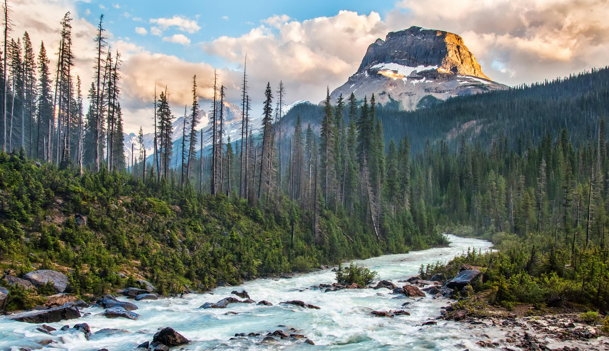

Our Rivers
Rapid Runners offers exciting journeys on many of Idaho's beautiful rivers. Whether you're an experienced rafter or if it's your first time in the water, we have an experience for you!

Lazy Daisy
The Lazy Daisy River is the perfect destination for first-time rafters, families, and anyone looking for a gentle adventure on the water. Winding through sunny meadows and peaceful pine groves, the Lazy Daisy offers calm, steady currents with just enough playful ripples to keep young explorers smiling. Its wide, shallow channels make it a safe and confidence-building environment, ideal for introducing children to the excitement of rafting without overwhelming them. Along the way, paddlers can enjoy sightings of friendly local wildlife—ducks, herons, and the occasional deer sipping from the shore—as well as plenty of sandy banks perfect for snack breaks or splashing around.
With certified guides on every trip and multiple easy entry and exit points, the Lazy Daisy provides a relaxing, stress-free experience from start to finish. Whether you’re a parent looking to make memories with your kids or a beginner eager to learn the basics, this river’s warm atmosphere and gentle flow make it a favorite for all ages. The Lazy Daisy truly lives up to its name: calm, cheerful, and effortlessly enjoyable.

Windy Pines
The Windy Pines River is the ideal choice for rafters seeking a step up in excitement without diving into full-on white-knuckle rapids. Known for its lively personality, this mid-level river winds beneath towering evergreens that give it both its name and its crisp, pine-scented breeze. The current moves at a spirited pace, weaving through smooth rock formations and creating pockets of choppy water that offer just the right amount of challenge for intermediate adventurers. Along the route, rafters will encounter several small waterfalls—gentle drops that deliver a refreshing splash and a burst of adrenaline without ever feeling overwhelming.
Perfect for adventurous families, small groups, or beginners ready for their next milestone, the Windy Pines River strikes a balance between thrill and comfort. Professional guides provide instruction and support throughout the trip, ensuring everyone feels confident tackling the river’s features. Scenic overlooks, quiet forested bends, and the sound of rushing water make the journey just as rewarding for sightseers as for excitement seekers. With its blend of moderate rapids, natural beauty, and accessible challenges, the Windy Pines River offers a memorable adventure that keeps rafters coming back for more.

Willapahook River
The Willapahook River is the crown jewel for seasoned rafters and adrenaline enthusiasts seeking a true test of skill. Carving its way through rugged canyon walls and dense, misty forest, the Willapahook is known for its powerful currents, sharp twists, and fast-moving drops that demand quick reflexes and confident paddling. Its signature rapids—nicknamed The Grinder, Devil’s Stairwell, and Hook’s End—challenge even experienced crews with turbulent whitewater and unpredictable surges that keep hearts racing from launch to landing.
Between the intense sections lie brief stretches of calm, giving rafters just enough time to catch their breath and admire the river’s raw, untamed beauty. But don’t get too comfortable—another surge of roaring water is always just around the bend. Safety gear and expert guides are mandatory on this river, ensuring every team is prepared to tackle its steep gradients and technical maneuvers.
For thrill-seekers craving an unforgettable, high-intensity adventure, the Willapahook River delivers in every way. It’s not for beginners, but for those ready to push their limits, this legendary waterway offers one of the most exhilarating rides in the region.